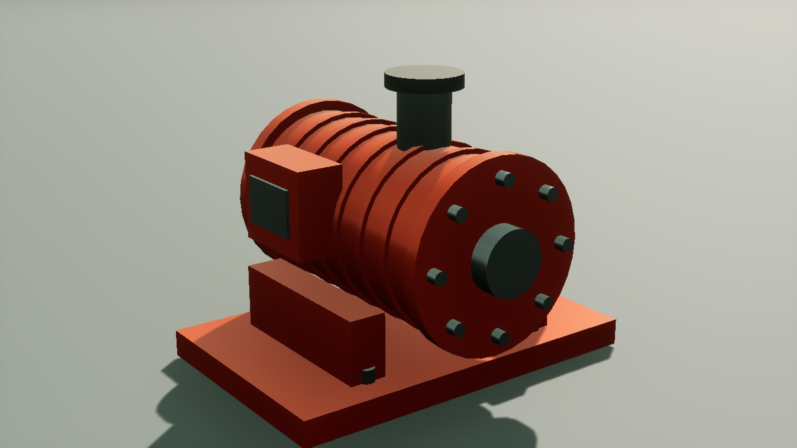

返回作品详情材质继承整理与外观对照
一个涂装泵体，十三个共用材质的部件。读取多级材质实例的最终参数，在新副本中缩短继承链，并用同机位渲染检查外观。
原实例：基础材质 → 红色家族 → 抛光分支 → 道具实例
新副本：基础材质 → 扁平副本
保留最终颜色、粗糙度、金属度、纹理与静态开关；六个源实例的前后参数快照一致。
同一场景，切换材质

原实例 · 三层继承新副本 · 一层继承副本保持相同的有效参数。固定画面 RGB 平均绝对差 0.137/255，最大差 3/255。
UE 5.8.1 · Windows D3D12 · 1600×900 · 同一几何、机位、光照与固定曝光。截图关闭抗锯齿，每次切换后等待240次编辑器Tick。画面保留原始像素。
有效参数与继承来源
候选筛选与副本操作
脚本向上读取父级链，取得最终 Scalar、Vector、Texture、StaticSwitch 参数，再对基础材质路径和参数字典生成签名。三级道具实例与直接继承的等效实例进入同一候选组；粗糙度和静态开关不同的实例分开。整理操作仅作用于新建副本，写入后重新读取参数，并比较全部源实例的前后快照。
这组案例展示资产组织与外观保持。父级链缩短的收益在管理和维护；GPU 耗时、Shader permutation 和 Draw Call 需要各自测量。本次未对它们给出提升数字。
当前支持单层材质的 Global 参数。Material Layers、Base Property Override、MPC 与纹理内容哈希尚未纳入签名；候选分组需要按具体资产继续审阅。